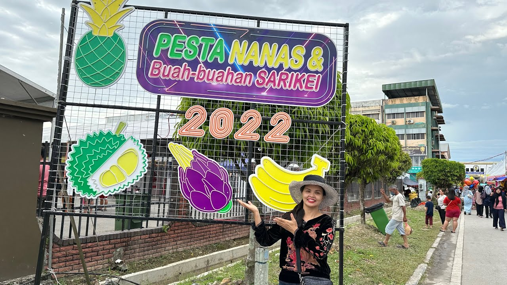
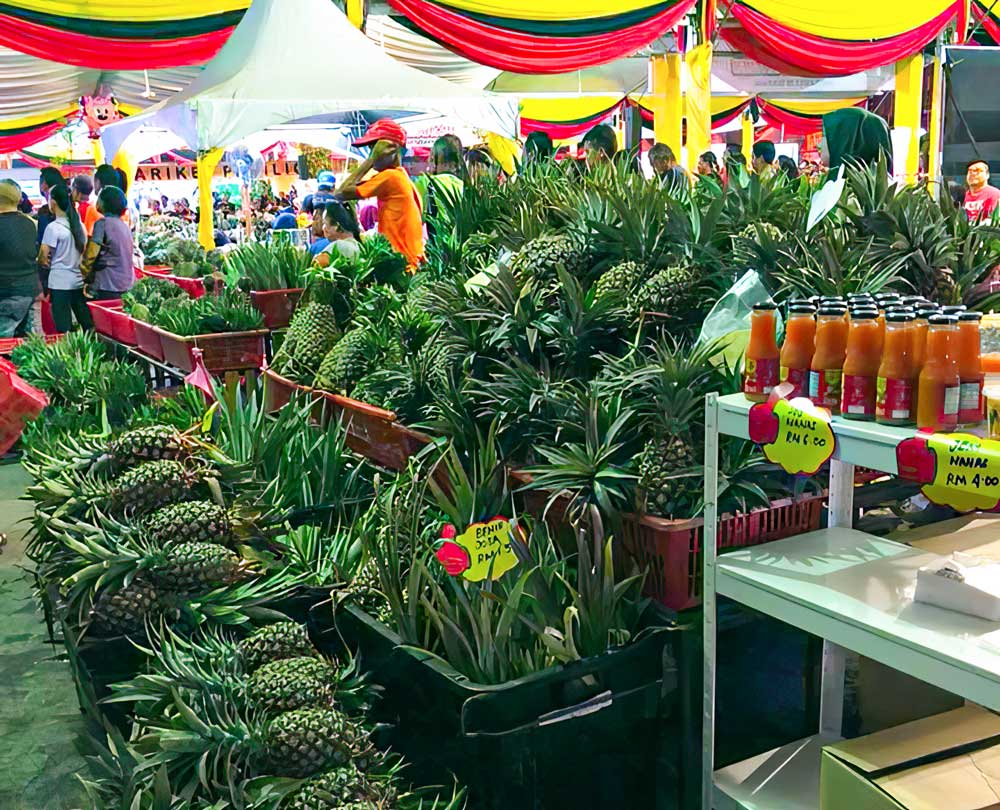

CULTURE IN SARIKEI
Pineapple Festival (Pesta Nanas)

The Sarikei Pineapple Festival is an event that has been manifested in the establishment of the Sarikei Division Tourism Task Group on February 12, 1998 and in the same time also has been appointed as the Pineapple Fruit Icon Sarikei. Annually held in November since 2013 During the festival, there are various activities taking place such as pineapple display competition, pineapple cooking competition, pineapple fashion show and many more. This will be an ideal time to visit Sarikei where you can experiences and sample the sweet and juicy pineapple fruits.
Originally in 1970s, farmers planted the first pineapples in Sarikei, particularly in the Sungai Sawang, Parit Tengah, Parit Bugis, Sungai Salah, Sungai Sageng and Bukit Kinyau area, as well as some peatlands around Sarikei. The fruits were sold at the Sarikei jetty to express boats and ships stopping over on the Kuching-Sibu-Sarikei route. Express boat and ship passengers who transit or had a final stop in Sarikei jetty bought the pineapples, and soon gifts of “NANAS Sarikei” become favorites because its unique taste. At that time, the pineapple's most popular cultivated species was “Moris,” now known as Nanas Sarikei. In addition, there are also species like “Paun” or “Madu” Pineapple.
Back To Top